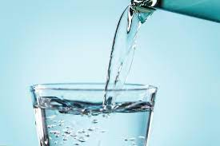

Water

Description
A necessity for life on Earth, a universal solvent, and the blandest of beverages, water is useful to all material beings. Despite its boring taste when consumed unadorned, every aspiring home chef should know how to make water from scratch. Water is useful in a great number of recipes, and who knows when the tap may run out!
Ingredients
- Porous sintered nickel electrodes
- Oxygen
- Hydrogen
- Potassium hydroxide electrolyte
- Palladium-silver tubes
- Chambers
- Misc. fuel cell parts
- Aluminum line
- Tank
- Tang (optional)
Steps
- Combine porous sintered nickel electrodes, oxygen, hydrogen, potassium hydroxide electrolyte, chambers, and misc. fuel cell parts into a fuel cell.
- Attach one end of aluminum line to fuel cell.
- Attach other end of aluminum line to tank.
- Run fuel cell at 483°K and 60 psi.
- Use palladium-silver tubes to diffuse excess hydrogen from water.
- Allow water from fuel cell to fill tank.
- Allow water to cool.
- Water is ready for use.
- If desired, add Tang to water for exciting taste.
Home chefs may wish to accessorize their water creation stations with chillers, heaters, or drinking guns as outlined here.